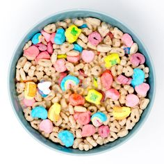

Cereal

Making a bowl of cereal is super simple! Heres how to do it:
Ingredients:
- Cereal (your choice)
- Milk ( dairy or non-dairy)
Materials:
Steps:
- Get Your Ingredients:
-Gather your cereal and milk.
- Choose a Bowl:
-Pick a bowl thats the right size for your serving.
- Pour the Cereal:
-Open the cereal box and pour your desired amount of cereal into the bowl.
- Add Milk:
-Pour milk over the cereal until it reaches your desired level. You can add more or less depending on your preference.
- Enjoy:
-Grab a spoon and dig in!
Enjoy your sandwish! Let me know if you have any questions